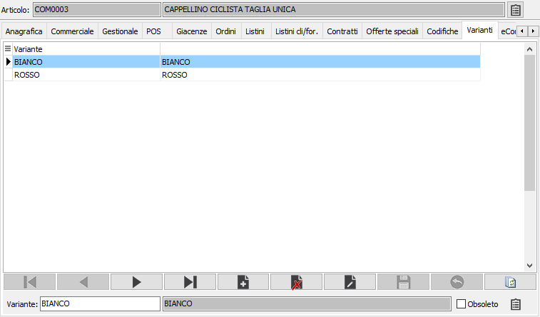

Varianti
La sezione è visibile solo in presenza del modulo Gestione varianti e visualizza le varianti associate al prodotto. Da questa finestra è possibile, inserendo singolarmente le varianti, associarle al prodotto attivo.
è possibilità gestire i dati delle scorte per variante; questi possono essere inseriti attraverso l'apposito bottone presente nella linguetta "Varianti" dell'anagrafica articoli. La scorta per variante può essere gestita anche per singolo magazzino se nella configurazione Magazzino è stato attivato il parametro "Scorta per magazzino"; inserendo un elemento con scorta a zero si avvisa la procedura che per la variante indicata la scorta non deve essere gestita.
La scorta per variante è utilizzata all’interno del nuovo modulo di produzione, dalla funzione di controllo scorte (in fase di compilazione documento) e dalla generazione ordini fornitori da ordini clienti.
